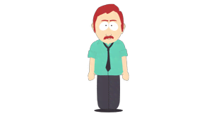
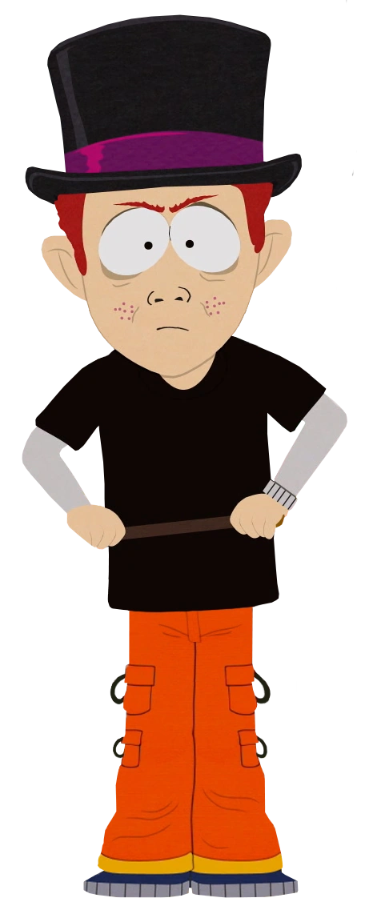

Eric Cartman lives with his mother Liane Cartman. She is a single mom and doesn't have much money. She loves her son very much but still gets tired of him sometimes
As we find out later in the series, Eric's father is noone other than Jack Tenorman. This character appears and also dies in season five. His death is Cartman's fault, who at the time didn't know it was his father and seeked revenge on a fellow student, Scott Tenorman.
Lastly we have Erics parental half-brother, Scott Tenorman. In the episode 'Scott Tenorman must die' Eric makes Scott eat his parents, because he has played a prank on him. That makes Scott hate Cartman and leads to Scott finding out about Jack being Erics father.
